Analytics Engineer & Analista de Dados
José Nélio
Economista com pós-graduação em Data Science & BI e especialização. Especialista no desenvolvimento de pipelines analíticos, modelagem de dados e inteligência de negócios.
Economista com pós-graduação em Data Science & BI e especialização. Especialista no desenvolvimento de pipelines analíticos, modelagem de dados e inteligência de negócios.
Economista com pós-graduação em Data Science & BI e especialização em Engenharia de Machine Learning. Possuo sólida experiência em Business Intelligence, Analytics e Inteligência Fiscal, atuando diretamente junto à alta gestão da Secretaria Municipal de Fazenda no desenvolvimento de soluções analíticas para suporte à tomada de decisão estratégica.
Tenho ampla experiência na criação de indicadores executivos, monitoramento orçamentário, análise financeira, cruzamento de dados fiscais e desenvolvimento de dashboards para apoio à gestão pública. Atuo em projetos envolvendo grandes volumes de dados da Receita Federal e da base nacional de CNPJs, utilizando SQL, Python, Power BI, BigQuery, Airflow e dbt.
Responsável pelo desenvolvimento de soluções de dados de ponta a ponta (desde a ingestão automatizada de fontes públicas até a entrega de painéis analíticos interativos), contribuindo diretamente para ações fiscais, identificação de oportunidades de arrecadação e melhoria dos processos de monitoramento financeiro do município.
Aplicações práticas demonstrando o ciclo completo de Engenharia de Dados (ETL/ELT) e Analytics Business Intelligence.
Engenharia de Dados & Business Intelligence
Este projeto realiza o ciclo completo de Engenharia de Dados: desde a ingestão automatizada de dados de arrecadação, salas e catálogos do portal público do governo federal (GovBr), passando pela limpeza e modelagem dimensional em banco de dados, até a entrega de dashboards interativos e painéis analíticos.
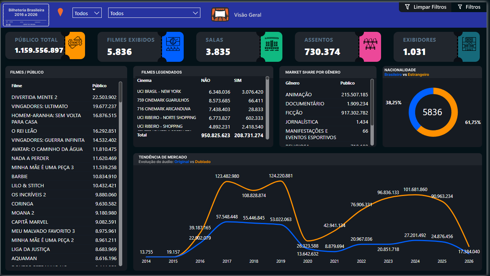
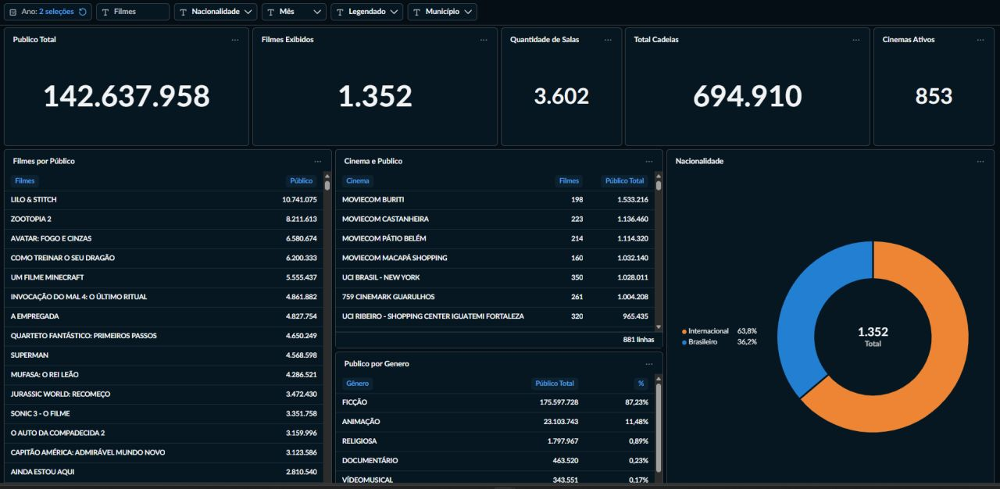
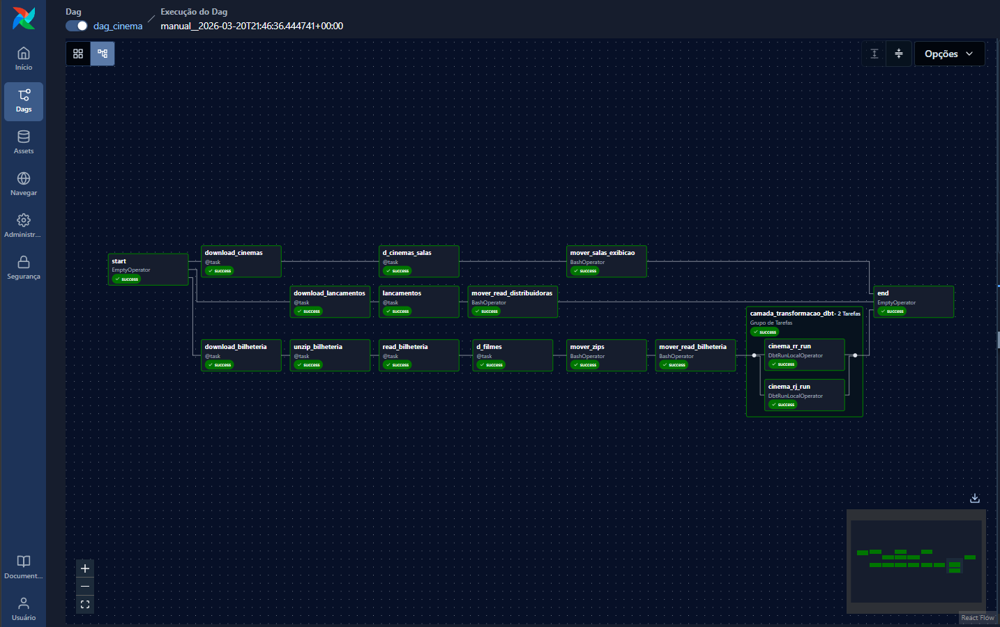
Engenharia de Dados & Business Intelligence
Este projeto realiza o ciclo completo de Engenharia de Dados voltado para dados eleitorais: desde a extração automatizada de perfis de eleitores, locais de votação e boletins de urnas diretamente dos portais abertos do TSE, passando pela limpeza e modelagem dimensional em banco de dados, até a visualização analítica interativa de dados demográficos e de apuração.
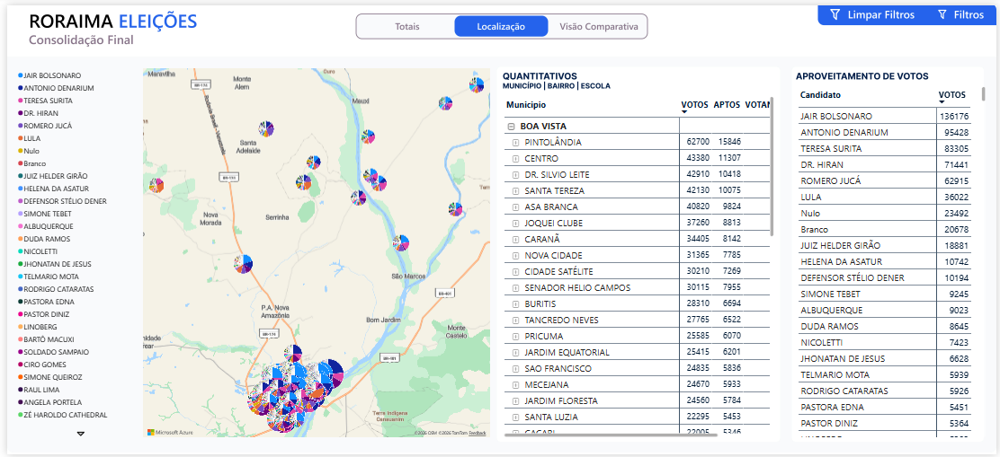
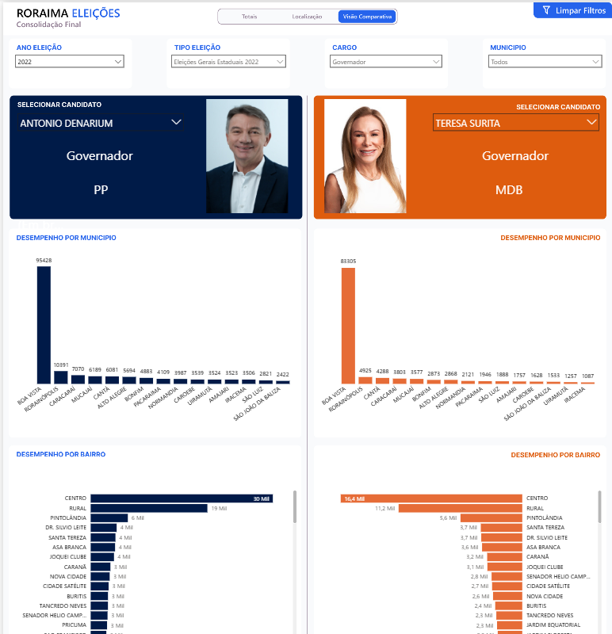
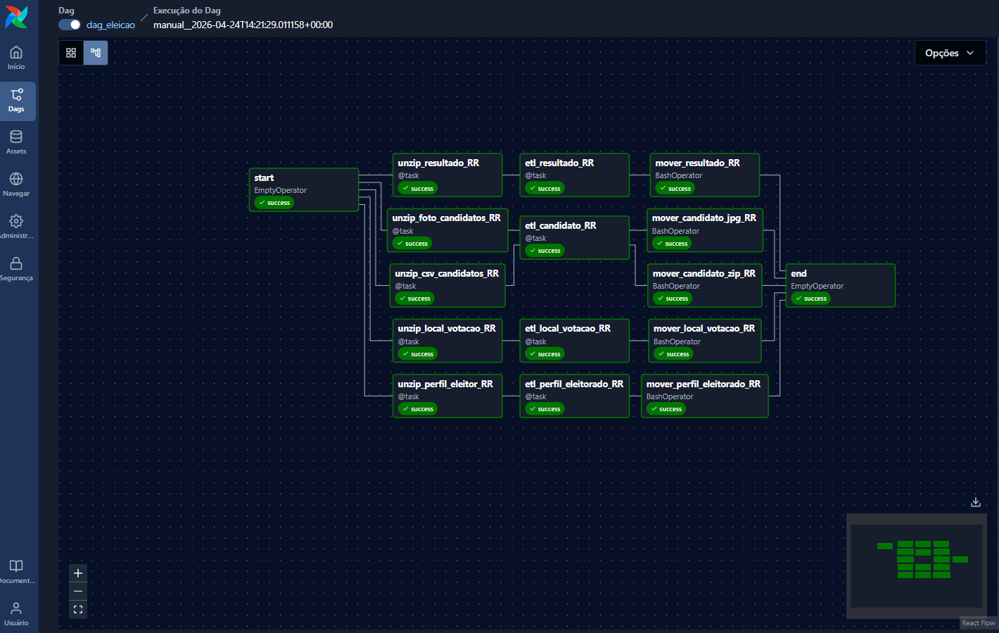
Engenharia de Dados & Business Intelligence
Este projeto implementa um pipeline híbrido e escalável para processar os dados da base pública de CNPJs da Receita Federal (GovBr), permitindo análises estratégicas de abertura, fechamento e saúde das empresas no município.
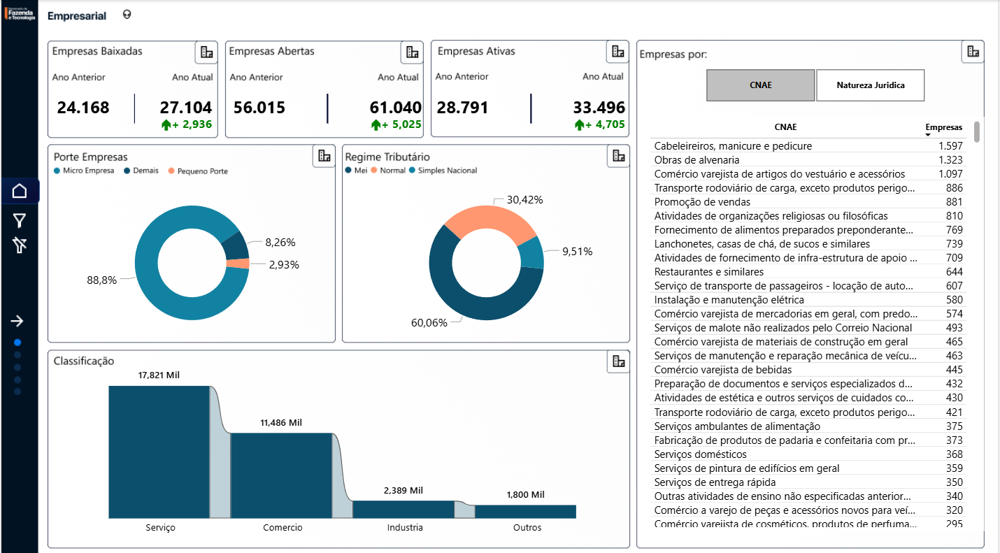
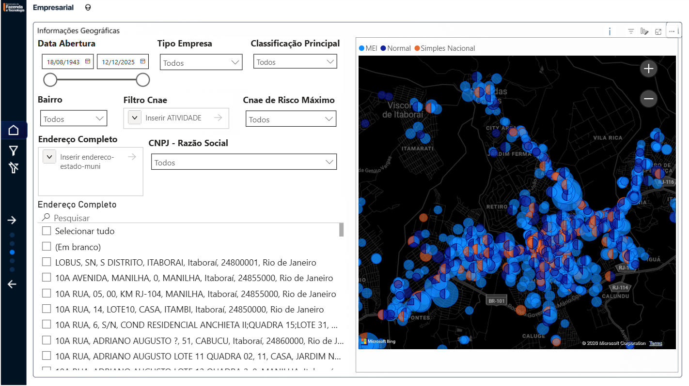
Engenharia de Dados & Business Intelligence
Este projeto demonstra o ciclo completo de Business Intelligence e Engenharia de Dados focado no varejo comercial. O pipeline inicia-se com a extração e restauração de backups gerados por um sistema ERP de vendas, prossegue com tratamentos avançados via queries SQL no PostgreSQL para consolidação e estruturação dimensional do banco de dados, e finaliza com a criação de painéis gerenciais altamente analíticos no Power BI.
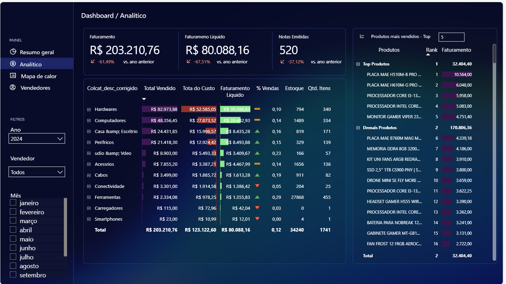
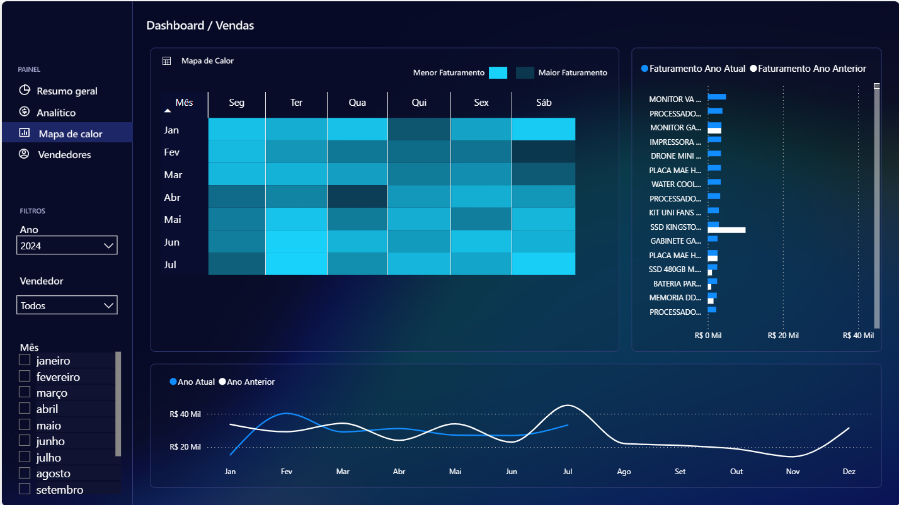
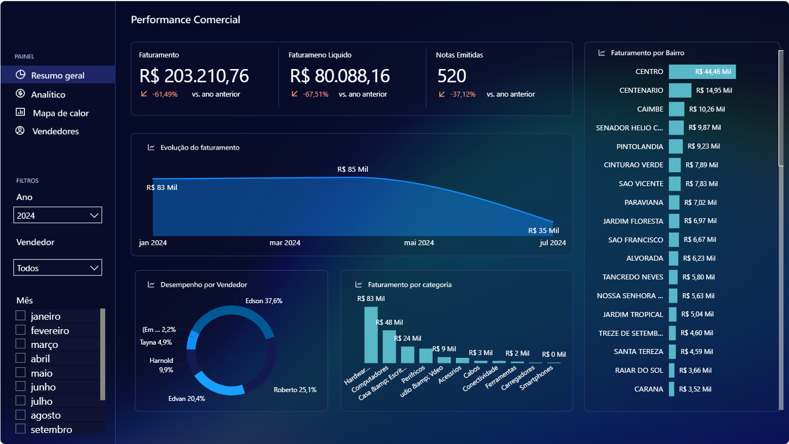
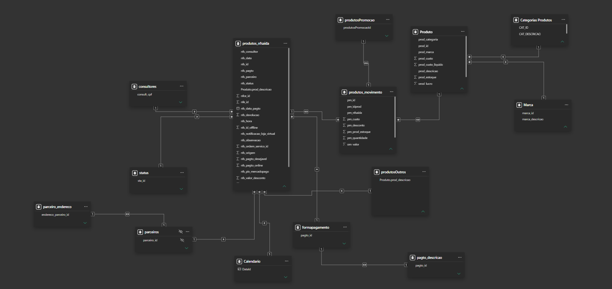
Business Intelligence & Análise Geográfica
Este projeto consiste na estruturação, tratamento e consolidação de dados contratuais. A partir de dados brutos disponibilizados em tabelas Excel desestruturadas, foi realizado um processo completo de ETL para padronização das informações de contratos. O diferencial analítico do projeto inclui a plotagem geográfica de pontos de localização exatos via ArcGIS e a criação de mapas temáticos interativos utilizando SVG, permitindo uma análise espacial avançada e intuitiva da abrangência dos contratos.
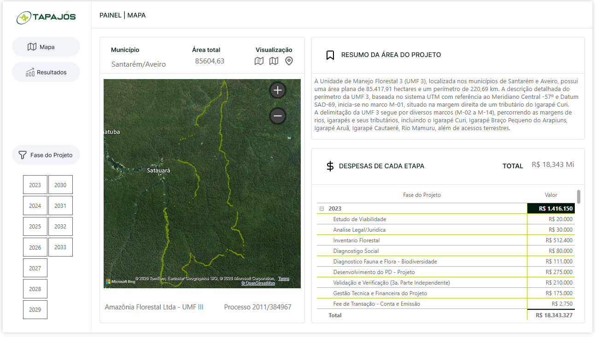
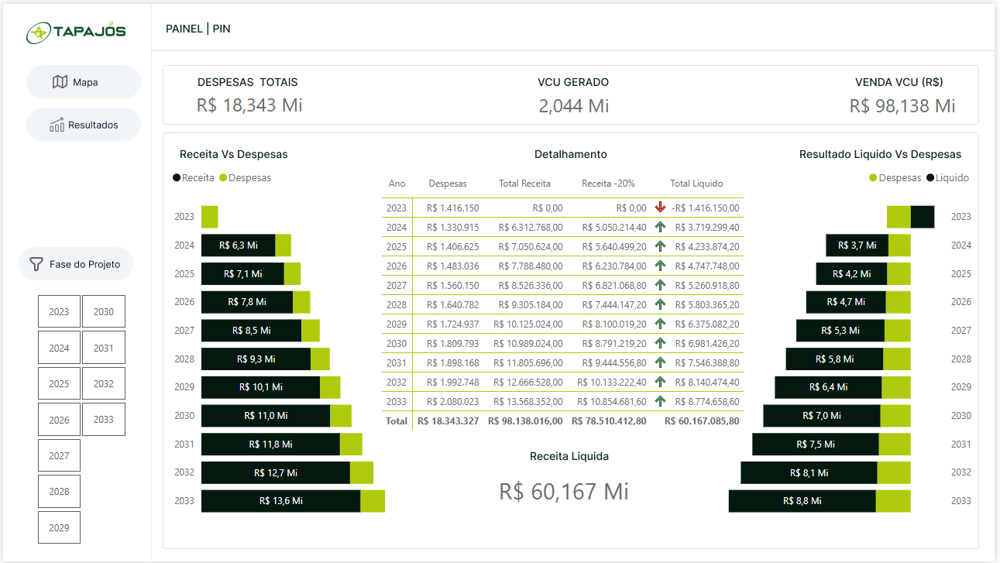
Engenharia de Dados & Business Intelligence
Este projeto consiste no desenvolvimento de uma solução analítica completa para o monitoramento e fiscalização da execução orçamentária municipal. A partir de dados brutos extraídos diretamente da base do sistema de gestão do município, foi estruturado um Data Warehouse em SQL Server. O pipeline de ETL realiza a leitura, cruzamento e consolidação de tabelas de fontes de recursos, receitas, despesas e unidades gestoras, alimentando um dashboard interativo focado na detecção de desvios e controle de gastos.


Construindo soluções analíticas de ponta a ponta para suporte à tomada de decisão estratégica na gestão pública.